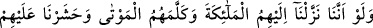
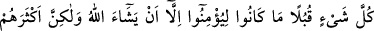
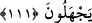
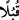
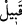

ki o vakit biz onların kalplerini hakdan çeviririz de onu anlamazlar. Gözlerini hakkı
görmekten çeviririz de onu görmezler ve ona inanmazlar.” demektir.
“Ve onları azgınlıkları içinde bocalar halde” şaşkın bir vaziyette “bırakırız.”
mü’minlere verdiğimiz gibi onlara hidayet vermeyiz.
Onlara yapılan bu muamelenin sebebi, istîdadlarının bozukluğu ve hakdan tamamen
yüz çevirmeleridir. Çünkü onlar Hakk’a yönelmiş olsalar ve onu kabûle de istîdadlı
bulunsalardı onlara bu muameleyi yapmazdı. Çünkü bu sırf cebir olurdu. Eğer bir kul
Allah’ın kahrına uğramış, kalbi mühürlenmişse bilsin ki bu Allah’ın lütfunun ona hiç
tesir etmemesindendir. En güçlü delil Allah’a âittir. Hidayet ve tevfik yalnız
Allah’dandır.
111. Eğer biz onlara melekleri indirseydik, ölüler de onlarla konuşsaydı ve her
şeyi toplayıp karşılarına getirseydik, Allah dilemedikçe yine de inanacak değillerdi;
fakat çokları bunu bilmezler.
“Biz onlara melekleri indirseydik”
Bu ayet 109. ayetteki: “Hem siz ne bileceksiniz ki o mûcize gelmiş olsa da onlar
yine inanmazlar!” âyetinde öz olarak zikredilen husûsun tafsilâtıdır. Yani, kâfirlerin
“Melekler bize indirilse de açıkça gözlerimizle görsek.” diyerek istedikleri gibi
melekleri onlara gönderseydik, demektir.
Yine kâfirlerin “Bir mûcize getir.” diyerek teklif ettikleri gibi ölüleri dirilttikten sonra
“ölüler kendileriyle konuşsaydı” îmanın hak olduğuna şâhitlik etseydi, demektir.
et-Teysîr adlı eserin müellifi ayetin tefsirinde şöyle demiştir: Her ne kadar onlar
senden sadece ölülerinden iki kişiyi; Kusayy b. Kilâb ile Cud‘ân b. Amr’ı diriltmeni
istemişlerse de biz bütün ölüleri diriltsek ve onlar senin doğruluğuna şâhitlik etseler
yine îman etmezlerdi. Bu iki kimse Kureyş’in büyüklerinden ve doğru tanınanlarındandı.
Onlar: “Eğer o ikisini diriltirsen ve senin doğru olduğuna şâhidlik ederlerse biz de
ederiz.” demişlerdi.
“Ve her şeyi toplayıp karşılarına getirseydik”
(
) kelimesi (
)’in çoğuludur ve kefil demektir. Buna göre mânâ: Her şeyi
toplayıp bu işin sıhhati ve Hz. Peygamber’in doğruluğu hakkında kefil getirseydik.”
demektir.
Ya da (Kubülen) kelimesi (kabîle)’nin çoğuludur, cemâatler ve topluluklar demektir.
Buna göre mânâ: “Biz diğer mahlûkâttan her şeyi çeşit çeşit, fevc fevc toplayıp